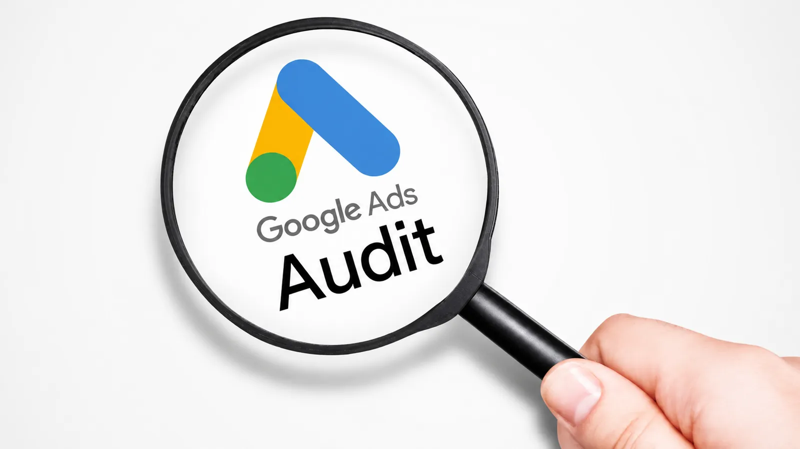

Кратък отговор: Одитът на Google Ads проверява дали акаунтът проследява правилните конверсии, показва реклами за правилните търсения на правилните места и харчи бюджета там, където наистина носи печалба. Десетте проверки по-долу откриват най-честите източници на загубен бюджет в малки и средни акаунти. Повечето могат да се направят за един следобед.
Основни изводи
- Започнете от проследяването на конверсиите. Ако Google оптимизира към грешните конверсии, всяка друга настройка работи срещу вас.
- Отчетът за думите за търсене показва какво реално са написали хората, преди да кликнат. Там се открива най-много загубен бюджет.
- Няколко настройки по подразбиране — таргетиране по локация, Search Partners, Display, автоматично приложени препоръки — често харчат пари, които не сте планирали.
- Поправете първо най-големите проблеми. Одитът е полезен само ако завършва със списък с приоритети.
Проверка 1: Правилните конверсии ли са зададени като основни?
В Цели → Конверсии прегледайте всяко действие за конверсия и статуса му.
- Основните (Primary) конверсии се използват за наддаване. Като основни трябва да са само действия с реална бизнес стойност: покупки, квалифицирани запитвания, записани разговори.
- Разглеждания на страници, „време на сайта" или кликове на бутони като основни конверсии учат Google да намира хора, които кликат, а не такива, които купуват.
- При форми за запитване броенето обикновено трябва да е Едно на клик, а не Всяко, за да не се отчита един човек, изпратил формата два пъти, като два лийда.
Проверка 2: Съвпадат ли конверсиите в Google с реалността?
Сравнете конверсиите в Google Ads за последните 30 дни с реалните поръчки или запитвания в магазина или CRM системата. Голяма разлика в която и да е посока означава, че проследяването трябва да се поправи преди всичко друго. Проверете дали Enhanced Conversions е включено, където е възможно, и дали сигналите за съгласие се предават за потребителите в ЕС (вижте ръководството ни за Consent Mode v2).
Проверка 3: Прегледайте отчета за думите за търсене
Отворете Статистика и отчети → Думи за търсене за последните 30–90 дни, сортирани по разход. Търсете:
- Търсения, които нямат връзка с това, което продавате
- Търсещи работа („работа", „заплата", „кариери")
- Намерение за безплатно или „направи си сам" („безплатно", „как да направя", „шаблон")
- Имена на конкуренти, за които не искате да наддавате
Добавете неподходящите като негативни ключови думи. Създайте споделени списъци с негативни думи, за да са защитени и новите кампании от първия ден.
Проверка 4: Таргетиране по локация — „Присъствие" или „Присъствие или интерес"?
В настройките на кампанията, в Локации → Опции за локация, по подразбиране обикновено е избрано Присъствие или интерес. Така рекламите ви може да се показват на хора извън района ви, които просто се интересуват от него. За местен бизнес в един град или услуга, достъпна само в една държава, изберете Присъствие: хора във или редовно в таргетираните локации.
Проверка 5: Search Partners и разширяване към Display
Кампаниите в търсенето могат да включват мрежата от партньори за търсене и в някои случаи дисплейната мрежа. Често и двете са включени по подразбиране. Разделете отчета на кампанията по мрежа: ако трафикът от партньорите или дисплея харчи пари без конверсии, изключете го.
Проверка 6: Автоматично прилагани препоръки
В Препоръки → Автоматично прилагане проверете кои препоръки Google има право да прилага сам. Някои могат да добавят ключови думи, да сменят наддаването или да разширяват типовете съвпадение, без никой да ги прегледа. Изключете всичко, което не сте избрали съзнателно.
Проверка 7: Взима ли Performance Max трафика към бранда ви?
Performance Max може да показва реклами при търсене на собственото ви име — хора, които така или иначе щяха да ви намерят. Така резултатите на PMax изглеждат по-добри, отколкото са. Използвайте изключване на брандове в PMax и сравнете резултатите с отделна Search кампания за бранда.
Проверка 8: Пасва ли стратегията за наддаване на данните?
Интелигентното наддаване (Целева CPA, Целева ROAS, Максимизиране на конверсиите) се учи от данните за конверсии. Ако кампанията има много малко конверсии на месец, алгоритъмът има малко данни и резултатите може да варират силно. Проверете дали стратегията отговаря на обема и качеството на конверсиите, които всяка кампания реално получава.
Проверка 9: Реклами и целеви страници
За всяка рекламна група проверете дали текстът на рекламата отговаря на ключовите думи и дали целевата страница отговаря на рекламата. Търсене „офис стол с лумбална опора" трябва да води към този продукт или категория — не към началната страница. Ad Strength в Google Ads показва разнообразието на активите, а не резултатите; оценявайте рекламите по конверсии и цена на конверсия.
Проверка 10: Отива ли бюджетът там, където е печалбата?
Вижте разхода и конверсиите по кампании и се запитайте:
- Кои кампании са ограничени от бюджета, но конвертират добре? Може да заслужават повече.
- Кои харчат постоянно, но рядко конвертират? Може да се нуждаят от поправка или пауза.
- Получават ли продуктите и услугите с висок марж пропорционално повече бюджет от тези с нисък?
Къде помага AI при одита на Google Ads — и къде не
Отчетът за думите за търсене в активен акаунт може да има хиляди редове. AI инструментите са добри за първоначален преглед: групират търсенията по теми и отбелязват вероятно неподходящите. Така часовете превъртане стават минути.
Но AI не познава бизнеса ви. Търсене с „евтин" може да е загубен бюджет за премиум бранд и идеално съвпадение за магазин с ниски цени. В моите одити AI сортира; аз взимам всяко решение за негативни думи и бюджет, проверено в реалния акаунт и спрямо маржовете на клиента.